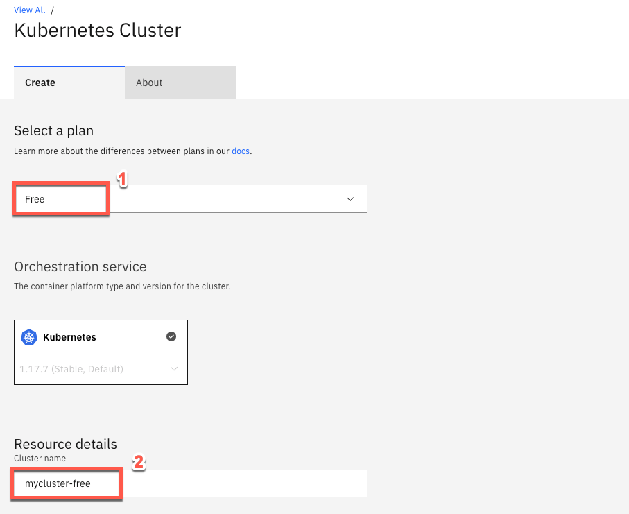
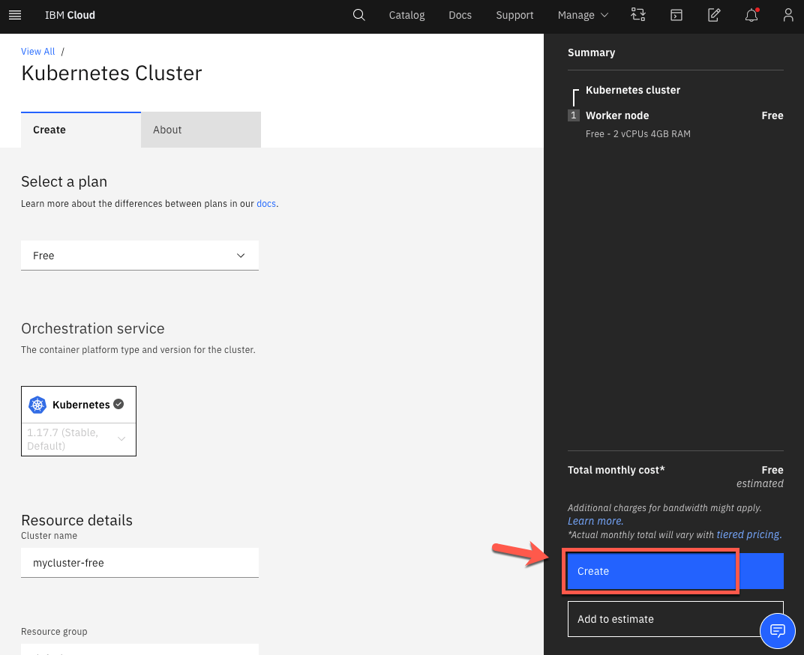
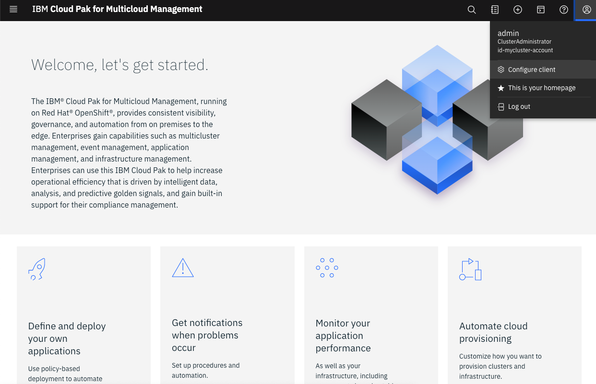
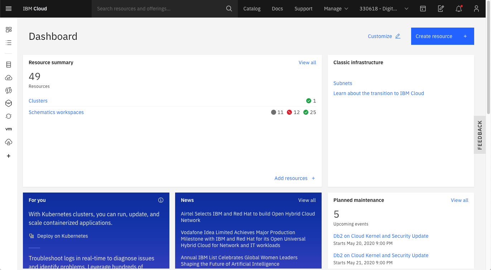
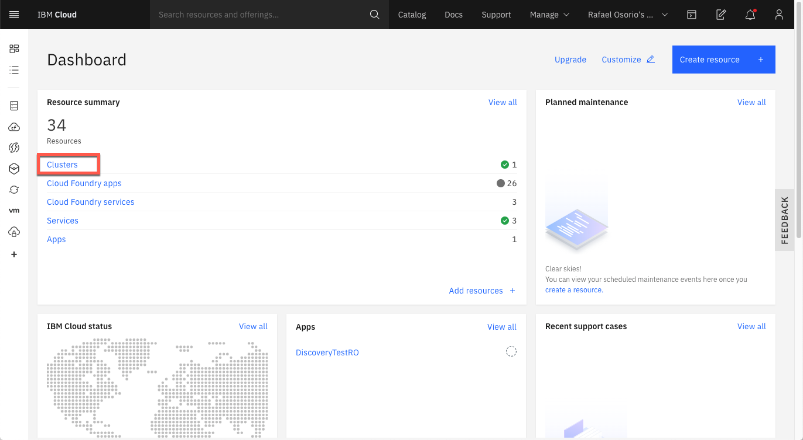
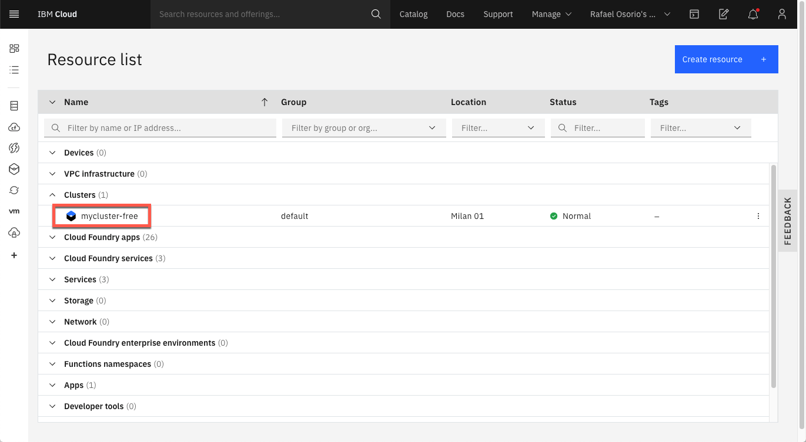
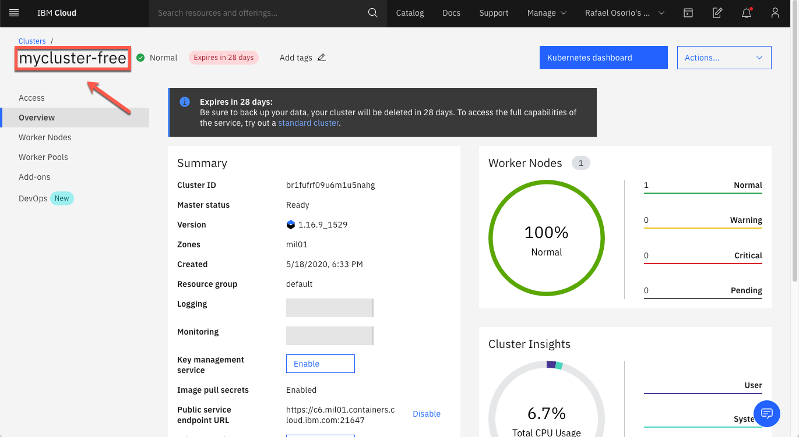
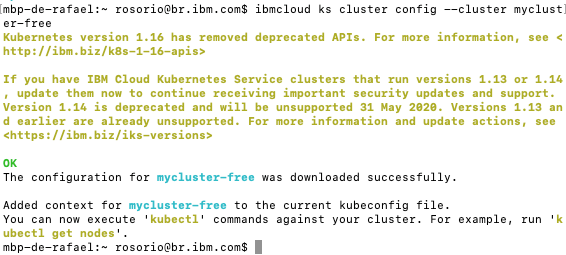
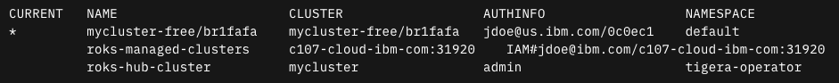
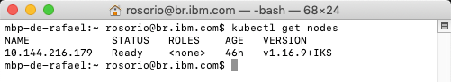

Students Prerequisite
Creating a free IKS clusters
In this section, you will learn how to create your free IBM Cloud Kubernetes Service (IKS) Cluster. This cluster will be a Managed cluster in the IBM Cloud Pak for Multicloud Management Workshop. In IBM Cloud, you can have 1 free cluster at a time in IBM Cloud Kubernetes Service, and each free cluster expires in 30 days. Free clusters have select capabilities, minimal 2x4 compute resources, select single zone locations, and support only the Kubernetes container platform and IBM Cloud classic infrastructure provider. Free clusters are ideal for testing out Kubernetes deployments and getting familiar with the IBM Cloud Kubernetes Service API, CLI, and console tools.
Note: to create a free cluster, you need to have an IBM Cloud account and upgrade your account to a Pay-As-You-Go or Subscription account, where you are the owner or have (full Administrator access)[https://cloud.ibm.com/docs/account?topic=account-assign-access-resources].
- Now that you have your IBM Cloud account ready to create a free IKS Cluster. In the IBM Cloud Catalog, select Kubernetes Service.

- Select the Free cluster option (1). You can keep the default name: mycluster-free (2).

- Click Create Cluster. A worker pool is created that contains one worker node.

The worker node can take a few minutes to provision, but you can see the progress in the Worker nodes tab. When the status reaches Ready, you can start working with your cluster.
Installing CLI Tools
CLI tools provide the ability to manage applications, containers, infrastructures, services, and other resources. In this section you will install all the necessary CLI tool in your local machine to be able to complete the Labs.
Note: If you have already installed all CLIs in your local machine, you can skip this page.
1.You should be on your CP4MCM Web Console, if not, check how to access it in Before Start page.
From the CP4MCM Web Console page, select the user icon, then click Configure client.

2.Click Install CLI tools.

3.Expand Install IBM Cloud Pak CLI (cloudctl). Read the text, then copy and run the curl command for your operating system.


4.After you run the curl command for your operating system, continue to install the IBM Cloud Pak® CLI.
To install the IBM Cloud Pak® CLI, run the command that matches your client computer operating system, where <path_to_installer> is the path to the directory where you downloaded the cloudctl file, and <install_file> is the downloaded file name.
For example, for Linux and macOS, run the following commands to change and move the file. Remember that the curl command for your cluster is located in the console:
chmod 755 <path_to_installer>/<install_file>
sudo mv <path_to_installer>/<install_file> /usr/local/bin/cloudctl
For Windows, rename the downloaded file to cloudctl and place the file on the PATH environment variable.

5.Confirm that cloudctl is installed:
cloudctl --help

6.Log in to your cluster with the following command:
cloudctl login -a <CP4MCM_Console_URL> --skip-ssl-validation
Where CP4MCM_Console_URL is the hostname of your CP4MCM console, something like https://icp-console.playgroth-mcm...appdomain.cloud
After the command, you need to enter your CP4MCM admin user (1), your admin password (32 charecters password that you defined in the CP4MCM installation) and enter default as namespace.

1.Let’s set up the kubectl CLI. Expand Install Kubernetes CLI to download the installer by using a curl command. Copy and run the curl command for your operating system, then continue the installation procedure in the product documentation.

2.Change the file to an executable, then move the file to a directory that is included in your PATH environment variable. See the following commands where <path_to_installer> is the location of the file that you downloaded and <install_file> is the name of the file:
For Linux and macOS, run the following commands to change the permissions of the file and move the file to a directory that is included in your PATH environment variable:
chmod 755 <path_to_installer>/<install_file>
sudo mv <path_to_installer>/<install_file> /usr/local/bin/kubectl
For Windows, rename the downloaded file to kubectl and place the file in a directory that is listed in the PATH environment variable.
You can use the Red Hat OpenShift on IBM Cloud command line interface (CLI) plug-in (ibmcloud oc) to create and manage your OpenShift cluster infrastructure, such as creating clusters and worker nodes. Then, you can use the OpenShift CLI (oc) to manage the resources within your OpenShift cluster, such as projects, pods, and deployments.
Run the command below to install the IBM Cloud CLI.
curl -sL https://ibm.biz/idt-installer | bash

2.To verify that the CLI and Developer Tools were installed successfully, run the help command:
ibmcloud dev help

3.Log in to IBM Cloud with your IBMid using the command below to guarantee that you will select your personal account (not DTE account).
ibmcloud login -a cloud.ibm.com -g default
Follow the instructions to log in your IBM Cloud account.
If your IBMid has SSO implemented, use: ibmcloud login -sso.
4.To avoid the login or SSO extra steps, you can generate an IBM Cloud API Key. Let’s do it! Create an IBM Cloud API Key by running the follow command:
ibmcloud iam api-key-create myibmcloudkey --file myic.key
5.Let’s test the new key. First logout from IBM Cloud.
ibmcloud logout
6.Now, log in using the command below:
ibmcloud login --apikey @myic.key -r <your_region> -g default -c <your_ibm_id>
1.Now open your OpenShift console (there is a link available in email that you received from IBM Cloud, after your Environment Request).
2.On Openshift Console, open the Help menu and select the Command Line Tools link.

3.On the OpenShift Command Line Interface section, download the OC CLI specific for your operational system.

4.If you are using Linux or macOS, run the following commands to change and move the file.
chmod 755 <path_to_installer>/<install_file>
sudo mv <path_to_installer>/<install_file> /usr/local/bin/cloudctl
5.To verify that the CLI was installed successfully, run the follow command:
oc get nodes
You will need Git CLI to clone some YAML files as part of the Application Management Lab. Follow the installation steps described in the page below Git site , based in your operational system.
Accessing the IKS Cluster
1.Back to the IBM Cloud Dashboard page.

2.On IBM Cloud Dashboard, click Clusters to see your IKS Free Cluster.

4.Click the IKS Free cluster to open the cluster view.

5.To configure your CLI to access this cluster, you will need the cluster name, take note of it.

6.Open a Terminal window, if you are not logged in IBM Cloud CLI, go ahead and log in using your IBM Cloud API Key (check IBM Cloud CLI section on Install CLI Tools page to know how to create an API key)
ibmcloud login --apikey @myic.key -r us-south -g default -c <your_ibm_id>
7.Set the Kubernetes context to your cluster for this terminal session.
ibmcloud ks cluster config --cluster mycluster-free

8.Check the Kubernetes context available, running the command below:
kubectl config get-contexts
You should have a mycluster-free that point to your IKS cluster.

Next step, you will rename this context to simplify how you interact with your IKS server during our lab. Copy the full name of your mycluster-free context.
9.Rename your context, running the command below:
kubectl config rename-context <mycluster-free/full_name> iks-free-cluster
10.Now, let’s set the current Kubernetes context
kubectl config use-context iks-free-cluster
Note: Anytime that you want to connect to your IKS Free cluster, you just need to run the command above.
11.Let’s test the new context configuration. Run the command below to get the cluster nodes.
kubectl get nodes

Great, your IKS cluster is configured and ready to use.